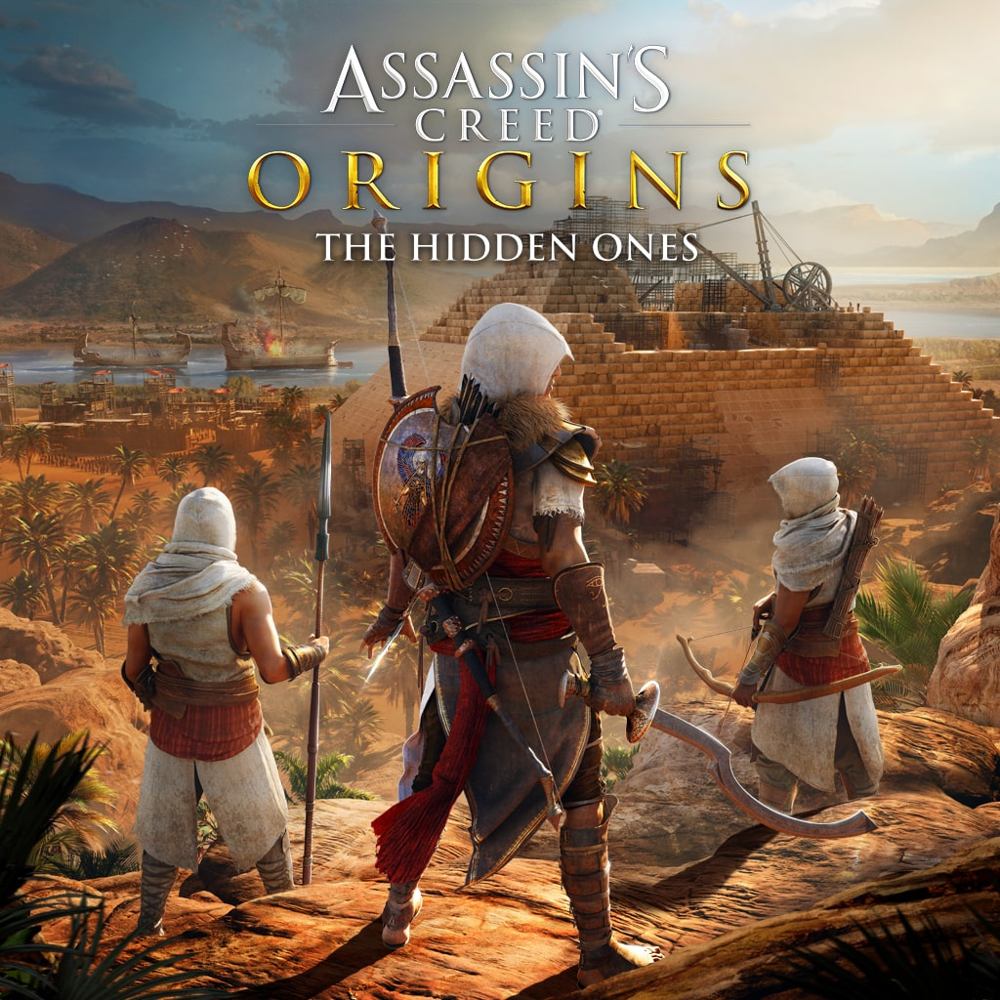

Assassin's Creed is an open-world, action-adventure, and stealth game franchise published by Ubisoft and developed mainly by its studio Ubisoft Montreal using the game engine Anvil and its more advanced derivatives. Created by Patrice Désilets, Jade Raymond, and Corey May, the Assassin's Creed video game series depicts a fictional millennia-old struggle between the Order of Assassins, who fight for peace and free will, and the Knights Templar, who desire peace through order and control. The series features historical fiction, science fiction, and fictional characters intertwined with real-world historical events and historical figures. In most games, players control a historical Assassin while also playing as an Assassin Initiate or someone caught in the Assassin Templar conflict in the present-day framing story. Considered a spiritual successor to the Prince of Persia series, Assassin's Creed took inspiration from the novel Alamut by the Slovenian writer Vladimir Bartol, based on the historical Hashashin sect of the medieval Middle East.
System Requirements
Memory: 8 GB.
Graphics Card: AMD Radeon RX 570
CPU: AMD Ryzen 5 1600
File Size: 75 GB
OS: Windows 10
Assassin's Creed Mirage
Assassin's Creed Mirage is an upcoming action-adventure game developed by Ubisoft Bordeaux and published by Ubisoft. It will be the thirteenth major installment in the Assassin's Creed series and the successor to 2020's Assassin's Creed Valhalla
System Requirements
Memory: 2 GB.
Graphics: Nvidia Geforce GTX 260 orAMD Radeon HD 4870
Processor: Intel Core2Quad Q8400 @ 2.6 GHz.
File Size: 75 GB
OS: Windows Vista SP2 or Windows 8 (both 32/64bit versions)
Assassin's Creed Black Flag
Assassin's Creed Mirage is an upcoming action-adventure game developed by Ubisoft Bordeaux and published by Ubisoft. It will be the thirteenth major installment in the Assassin's Creed series and the successor to 2020's Assassin's Creed Valhalla
System Requirements
Memory: 8 GB.
Video card 256 MB DirectX 9.0-compliant card with Shader Model 3.0 or higher
Operating system Windows XP, Windows Vista, or Windows 7.
Assassin's Creed Brotherhood
Assassin's Creed: Brotherhood is a 2010 action-adventure video game developed by Ubisoft Montreal and published by Ubisoft. It is the third major installment in the Assassin's Creed series, and the second chapter in the "Ezio Trilogy", as a direct sequel to 2009's Assassin's Creed II
System Requirements
Memory: 8 GB.
Graphics Card: AMD Radeon RX 570
CPU: AMD Ryzen 5 1600
File Size: 75 GB
OS:Windows 8.1, Windows 10

Assassin's Creed Orgins
Assassin's Creed Origins is a 2017 action role-playing video game developed by Ubisoft Montreal and published by Ubisoft. It is the tenth major installment in the Assassin's Creed series, following 2015's Assassin's Creed Syndicate. Principally set in Egypt, near the end of the Ptolemaic period from 49 to 43 BC, the story follows a Medjay named Bayek of Siwa and his wife Aya as they seek revenge for the murder of their son, and explores the origins of the millennia-long conflict between the Hidden Ones—forerunners to the Assassin Brotherhood, and the Order of the Ancients—forerunners to the Templar Order. The framing story, set in the 21st century, follows a new character, Layla Hassan, who relives Bayek and Aya's memories using a modified Animus device
Assassin's Creed Mirage is an upcoming action-adventure game developed by Ubisoft Bordeaux and published by Ubisoft. It will be the thirteenth major installment in the Assassin's Creed series and the successor to 2020's Assassin's Creed Valhalla
System Requirements
Memory: 6 GB.
Graphics Card: NVIDIA GeForce GTX 660 (2GB VRAM)
CPU: AMD Ryzen 5 1600
File Size: 75 GB
OS:Windows 7 SP1, Windows 8.1, Windows 10
Assassin's Creed Syndicate
Assassin's Creed: Brotherhood is a 2010 action-adventure video game developed by Ubisoft Montreal and published by Ubisoft. It is the third major installment in the Assassin's Creed series, and the second chapter in the "Ezio Trilogy", as a direct sequel to 2009's Assassin's Creed II
Development history
While the games in the series have had several narrative arcs, Ubisoft views the series as currently having three periods of development and design philosophy. Phase one, covering up to Assassin's Creed Syndicate, featured games structured around single-player content, and while centering on open world spaces and several role-playing elements, were more action-adventure and stealth-oriented. Period two, covering from Assassin's Creed Origins to Assassin's Creed Mirage, brought in more role-playing elements and live-service features to increase player engagement. Period three will launch with Assassin's Creed: Red, using lessons from the second period of development to make engrossing single-player games similar to the original titles but with features to allow players to share achievements and content with others, all to be backed by the Infinity hub system.
.jpg)